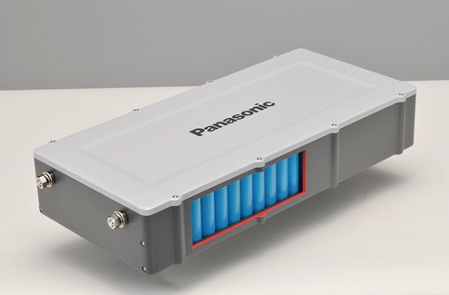

PANASONIC ANUNCIA UNA BATERIA DE LITRO DE ALTA DURACION
En Panasonic se habla de la batería de Ion Litio más potente creada hasta ahora, y de ser cierto va a dar mucho de qué hablar.
Esta nueva batería permitirá recargar los equipos electrónicos que normalmente se encuentran en una casa durante aproximadamente una semana sin utilizar ninguna otra forma de energía. Además, se puede conectar al televisor para monitorear la cantidad de energía restante en la batería.
Sin duda alguna una iniciativa importante que llega desde Japón, y es que no es sólo la batería en sí, que ya es bastante, sino que la tecnología podría ser aplicada a muchas otras cosas, como teléfonos móviles o computadores portátiles para que sean mucho más autónomos.
